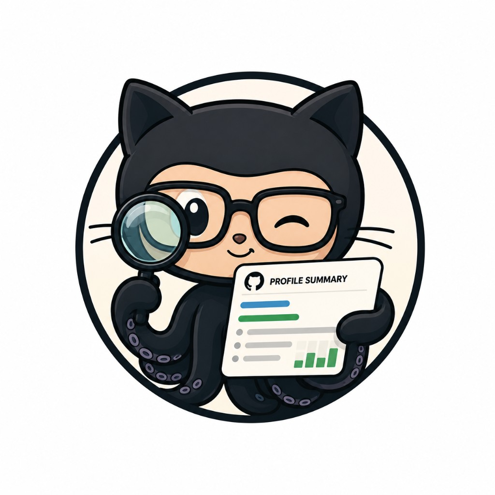

GitLens turns any public GitHub profile into an interactive dashboard.
Stored only in your browser. Lifts the GitHub API limit from 60 to 5000 requests/hour. A token with no scopes (public access) is enough.
We couldn't find a GitHub user with that username. Please check the spelling and try again.
GitLens hit the GitHub API rate limit. Add a personal access token on the search screen, or come back a little later.
An unexpected error occurred. Please try again in a moment.